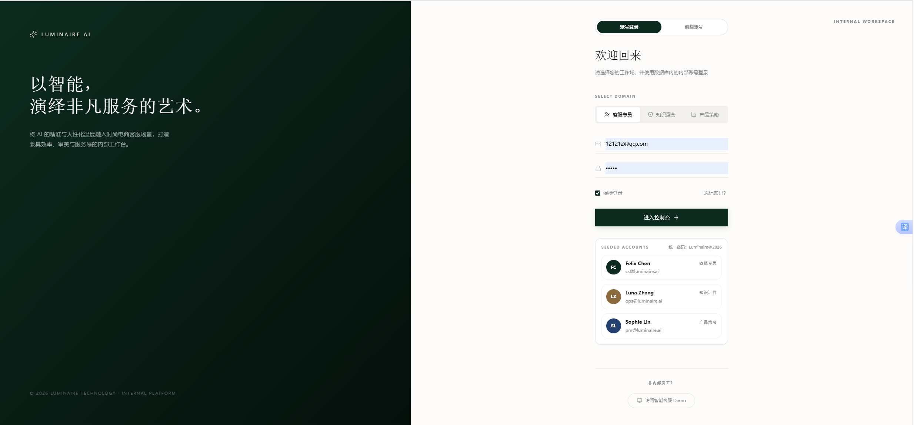
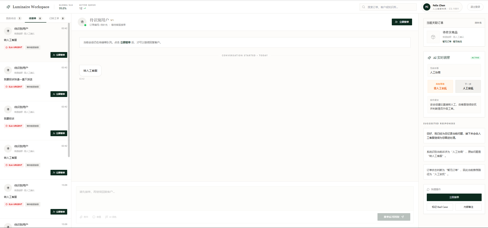
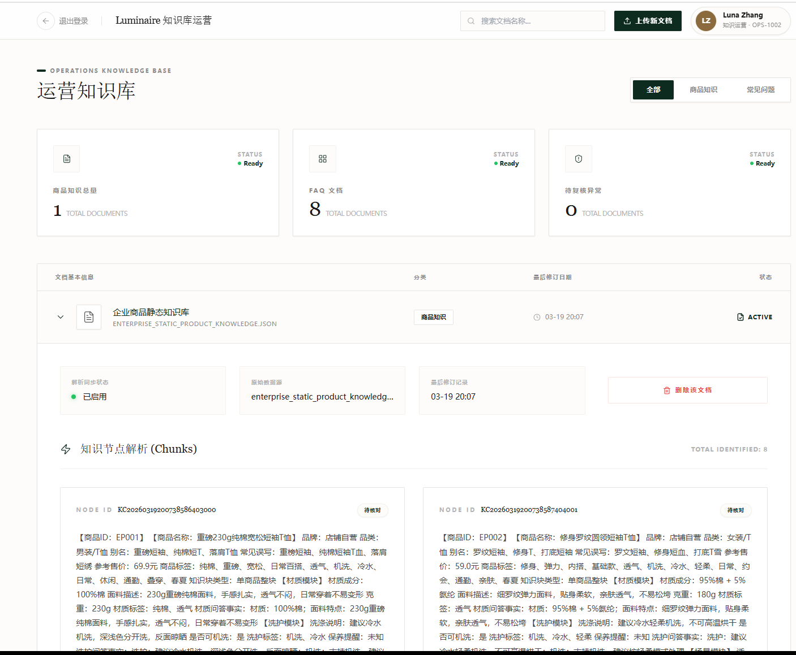
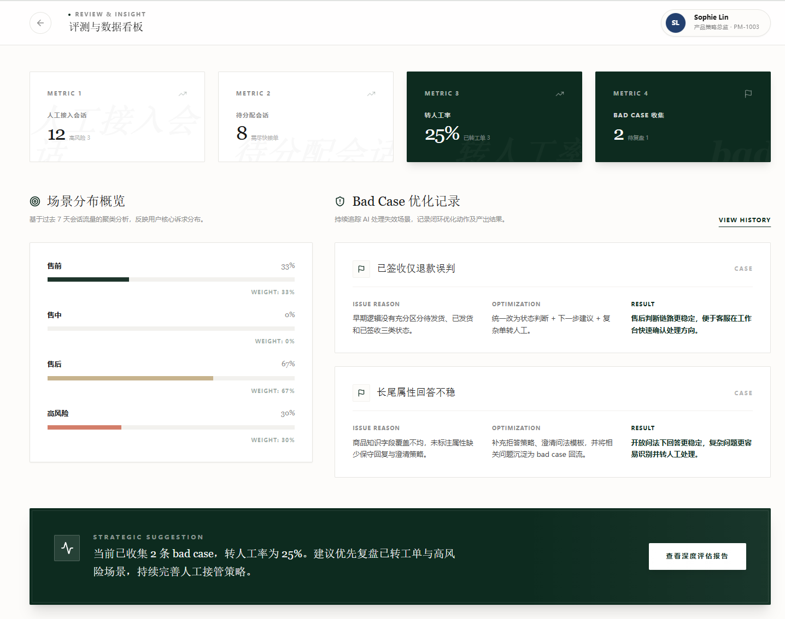

Interface Showcase
真实界面展示
这里集中展示项目中的 5 个关键界面。左侧解释页面在闭环中的职责， 右侧直接使用真实截图展示完整页面结构。
智能问答
客服辅助
工单流转
工作台优化
知识运营
数据分析
持续迭代优化
LoginPage
登录入口
界面定位内部业务系统的统一安全入口，负责角色识别与工作台分发。
面向角色客服专员、知识运营、产品策略 / 管理角色。
核心功能统一账号登录、角色切换与工作台分流，建立清晰的 RBAC 访问边界。
解决的问题避免系统账号割裂、入口混乱和身份体系不一致。
设计价值它让项目从单页 demo 提升为完整的多角色协同后台。

customer_app.py
用户服务入口
界面定位面向消费者的统一服务入口，承接商品咨询、订单、物流和售后问题。
面向角色C 端用户 / 电商消费者。
核心功能通过推荐问题、开放提问与状态提示，将用户路由到 FAQ、RAG、Workflow 或人工接管流程。
解决的问题避免普通聊天框缺少业务边界，让标准问题自动处理、复杂问题有序转人工。
设计价值这一页集中体现了智能问答、服务路由与人工兜底能力，且会话与后台链路保持同步。

WorkspacePage.jsx
客服工作台
界面定位复杂问题承接工作台，是人机协同真正发生的中枢。
面向角色客服专员 / 人工坐席。
核心功能展示会话队列、会话内容、关联订单、AI 洞察、建议回复与快捷操作，支持客服快速接单和处理。
解决的问题客服无需从零理解问题，可直接继承历史会话、订单状态和风险判断。
设计价值这一页最集中地体现了客服辅助、工单流转与工作台优化能力。

KnowledgePage.jsx
知识库运营后台
界面定位面向运营侧的知识资产管理后台，负责保障 RAG 的知识质量。
面向角色知识运营人员。
核心功能支持文档上传、分类管理、chunk 预览、状态追踪和异常删除，并可针对 bad case 快速回补知识。
解决的问题把知识维护转成可视、可校验、可追溯的运营动作，减少知识滞后带来的回答漂移。
设计价值它强化了知识运营与 RAG 数据治理能力，让项目覆盖到底层知识机制。

AnalyticsPage.jsx
评测数据看板
界面定位系统评测与策略优化的控制台，用于观察 AI 的真实承载效果。
面向角色产品 / 策略角色。
核心功能呈现人工接入量、转人工率、bad case、场景分布与优化建议，并支持进入下一轮策略调整。
解决的问题把模型上线后的“黑盒状态”拆解为可量化指标，帮助判断优先级并验证优化是否生效。
设计价值这一页最能体现数据分析、评测体系与持续迭代优化能力。
